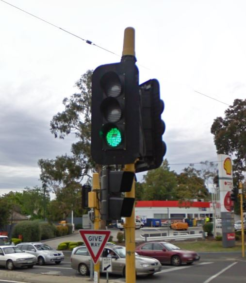
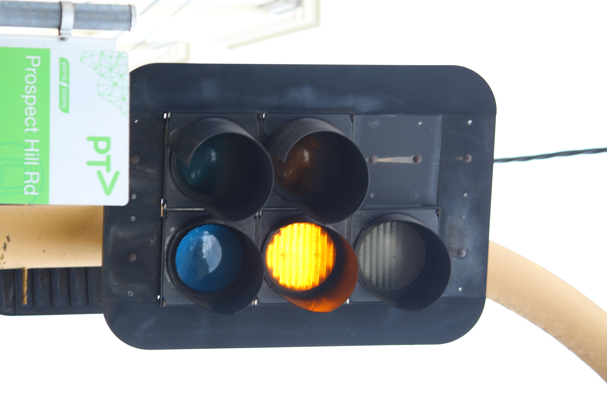
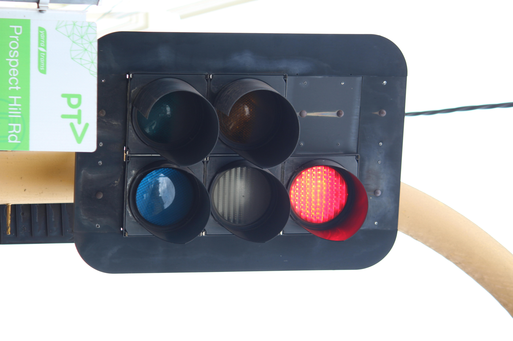

{kind=link}
{kind=link}
{kind=link}
 Green
Green Red
RedGoogle Streetview (Nov, 2009) - what a green LED module looked like.
The first of Aldridge's LED signals - These were installed into AEI and ATS housings in the mid-90's, at two intersections on Burke Rd, Camberwell - Prospect Hill Rd, and Barkers Rd.
The clear LEDs at Barkers Rd were replaced in the early 2010's with newer ATS LEDs, however the lights at Prospect Hill Rd remain.
The only variants of the LED modules are a ball light, and a pedestrian light. The ball lights have a delay turning on, and the pedestrian lights fade in and out, like a halogen light. Unfortunately, no green ball modules exist in service anymore, likely due to unreliability.
All lights of this version use cutaway/scoop visors exclusively.
| Ball signal | Pedestrian signal | |||
|---|---|---|---|---|
|  | Yellow aspect | Red aspect | Green |
Red |
| Barkers Rd/Burke Rd, Camberwell, VIC. Google Streetview (Nov, 2009) - what a green LED module looked like. |
Green module has been replaced by a Tyco LED module. | The LED design looks similar to the second revision of clear LEDs. | ||
| Prospect Hill Rd/Burke Rd, Camberwell, VIC. | ||||
A 12" clear ATS LED light, the only one of its kind still left in service, at Cookson St/Burke Rd, Camberwell, VIC. Installed presumably also in the 1990's; fitted into an AEI housing.
 Green Green |
 Red Red |
 Back view - A bit dirty... Back view - A bit dirty... |